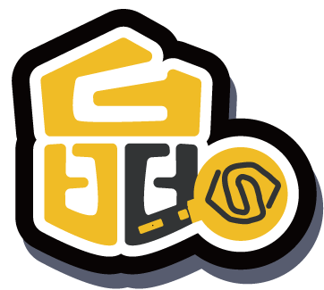

傳奇的誕生：出道與巔峰
1997年4月15日，水晶男孩以《學園別曲》正式出道，是韓國第一代偶像團體，與H.O.T.並稱為90年代後期兩大山脈。團名源自德語「六顆水晶」，象徵六位成員能左右命運。
分為「黑水晶」（殷志源、李宰鎮、金在德 — Rap與舞蹈）和「白水晶」（姜成勳、高志溶、張水院 — 主唱）。
身為在回歸後才被這場 「黃色奇蹟」 擊中的新一代粉絲，我深刻體會那種從好奇觀看到最終徹底淪陷的悸動。
水晶男孩（SECHSKIES）的魔力在於：即便錯過他們第一次站上大型舞台的年代，依然會被他們 熱血、真誠且專業 的魅力所感動。這裡不僅是資訊站，更是由熱愛凝聚的空間。從台上的職人氣場，到台下像家人吵架又像互相撐腰的 反差，把「現在入坑」變成一種完全被允許的日常。
經典不是博物館的玻璃櫃，而是每次重播都讓人想跟著跳的節奏。加入我們，一起把手上的應援色舉高一點。
本站是以 SECHSKIES 水晶男孩 為核心的數位推廣部，旨在透過 專業的視覺策展 宣傳成員魅力與 小黃們的應援活動。我們不滿足於傳統的追星模式，而是嘗試以水晶男孩為 靈感主軸，延伸至 網頁開發、視覺設計與內容企劃 等多重領域，將對偶像的喜愛轉化為 實質的專業養分。在這裡，你不只能探索他們的 傳奇軌跡，更能見證追星如何激發 創作潛能。
「晶」字發想來自六角形的水晶，為了強調水晶男孩初心為六人。上半部形似數字 6，搭配演唱會必備的手燈圖案，代表粉絲和水晶密不可分的關係。色彩配置發想來自回歸舞台成員脫下眼罩的剎那，整個場地從一片漆黑瞬間發亮，映入眼簾的是一片黃色海洋。以此片段為契機，設計成黑色系與黃色系的色彩搭配，來記錄那瞬間的感動。

設計語彙：六角、黃海與初心1997年4月15日，水晶男孩以《學園別曲》正式出道，是韓國第一代偶像團體，與H.O.T.並稱為90年代後期兩大山脈。團名源自德語「六顆水晶」，象徵六位成員能左右命運。
分為「黑水晶」（殷志源、李宰鎮、金在德 — Rap與舞蹈）和「白水晶」（姜成勳、高志溶、張水院 — 主唱）。
2000年5月20日正式解散，成員各自發展，水晶暫時進入休眠期。
透過《無限挑戰》「六六歌2」跨越16年再次重聚，引起全韓黃色氣球海再現。
調整為四人組合（殷志源、李宰鎮、金在德、張水院），繼續以經典魅力活躍於樂壇與綜藝。
隊長殷志源活躍於各類綜藝節目，成員們也積極參與音樂與個人品牌活動。雖然活動節奏放緩，但水晶男孩仍是 K-POP 史上的長壽標竿。
像劇情的反轉一樣過癮：這幾個節點，剛好是許多人從「旁觀綜藝」滑進「正式入坑」的轉軌。若想讀對白級細節，隨時可切到完整紀實長文。 開啟完整紀實篇章
把懸念、試探與哭點縫在同一條時間軸上；很多人第一次真正把「水晶男孩」打進搜尋框，就是從這種瘋狂的剪輯節奏開始。
KTV、游擊演唱會規則、與其說講道理不如說把真心擺上桌面——交涉的不是合約字面，而是還願不願意再一次肩並肩。
變數一個個被排除之後，驚喜接上登場段落；缺一角舞台的視覺，終於對齊觀眾席上堅守的那片黃。
急凍、告別、各自的跑道——並不是要你沉浸遺憾，而是讓你懂：後來每一次亮燈，為什麼會更值得尖叫。